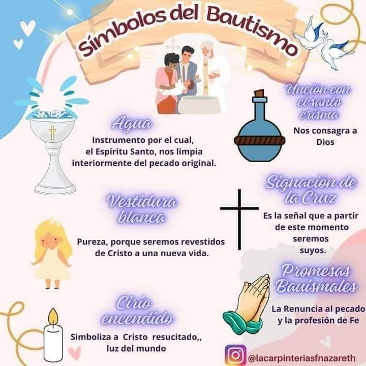
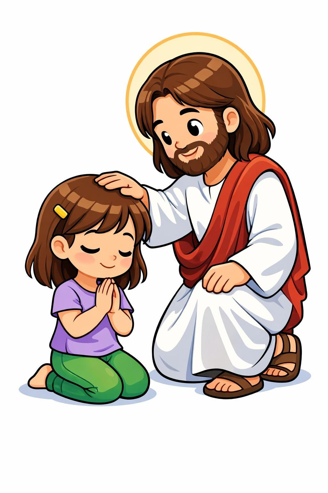
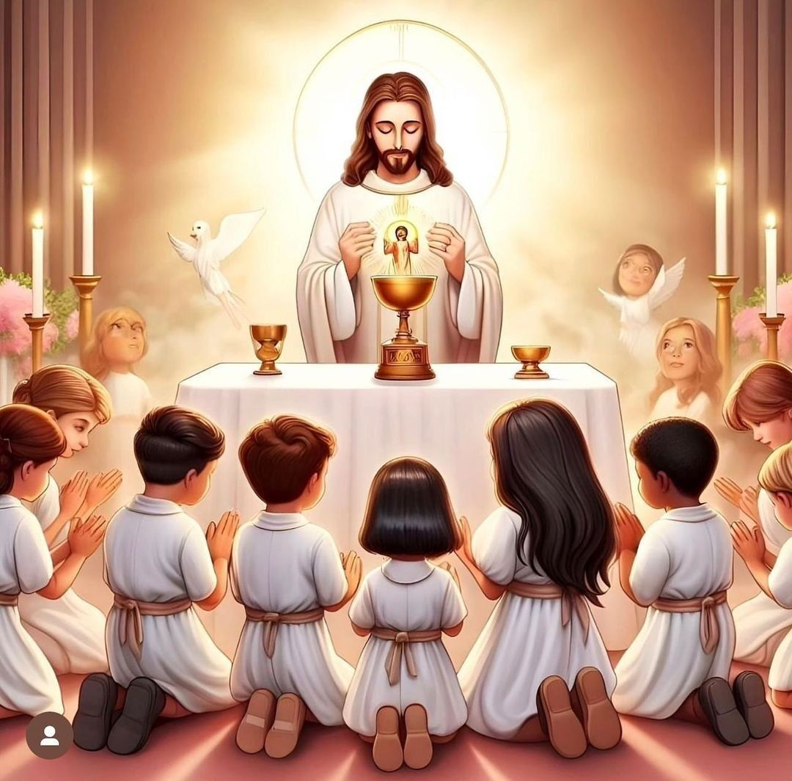

<!DOCTYPE html>
<html lang="en">
<head>
    <meta charset="UTF-8">
    <meta name="viewport" content="width=device-width, initial-scale=1.0">
    <meta name="author" content="Marcela">
    <title>Galeria</title>
</head>
<body>
<!--  Estilo que se le da a la pagina web-->
    <style>
        body{
            background: linear-gradient(rgb(179, 245, 229), rgb(114, 209, 179));
            }
        blockquote{
            font-family: Helvetica;
        }
        fieldset{
            background: linear-gradient(rgb(249, 135, 239), rgb(236, 187, 231));
        }
    </style>
</body>


 <!--  Es el header de la pagina y se va a ver en las 3 paginas-->
    <header>
        <!--  Navegador para abrir los enlaces de las paginas-->
                <nav>
                <ul>
                    <li><a href="Index.html" target="_blank">Catequesis</a> </li>
                    <li><a href="Contacto.html" target="_blank">Matricula</a> </li>
                    <li><a href="Galeria.html" target="_blank">Galeria</a></li>
                </ul>
                </nav>
        
        <br><br>

    <!--  Codigo para el Logo en svg-->
        <svg width="100" height="100" viewBox="0 0 100 100" xmls="http://www.w3.org/2000/svg">
        <circle cx="50" cy="50" r="40" stroke="#e67e22" stroke-width="4" fill="#f1c40f"></circle>
        <line x1="10" y1="50" x2="90" y2="50" stroke="#c0392b" stroke-width="7"></line>
        <line x1="50" y1="10" x2="50" y2="90" stroke="#c0392b" stroke-width="7"></line>
        </svg>
            
        <h1>Bienvenidos a la Catequesis</h1>
<!--  Audio de fondo el usuario lo puede controlar si lo quiere oir ya que esta en muted-->
        <audio controls autoplay loop muted>
            <source src="Audio/Audio1.mp3" type="audio/mp3">
            <source src="Audio/Audio2.mp3" type="audio/mp3">
        </audio>

    </header>

    <br><br>


<main>x
<!--  Video explicativo de los sacramentos-->
    <h3>Video de los sacramentos</h4><br>

    <video controls autoplay muted loop>
        <source src="Video/Video1.mp4" type="video/mp4">
        <source src="Video/Video2.mp4" type="video/mp4">
    </video>

    <br><br>
<!--  Imagenes de los sacramentos-->
    <h3>Imagenes de los Sacramentos </h3>

    
    
    <br><br>

    

    <br><br>

    

    <br><br>

    


</main>

<br><br>

<!--  El pie de la pagia-->
<footer>

    <p>&copy; exclusivo para la Catequesis. Derechos reservados.</p>

</footer>
    
</body>
</html>
